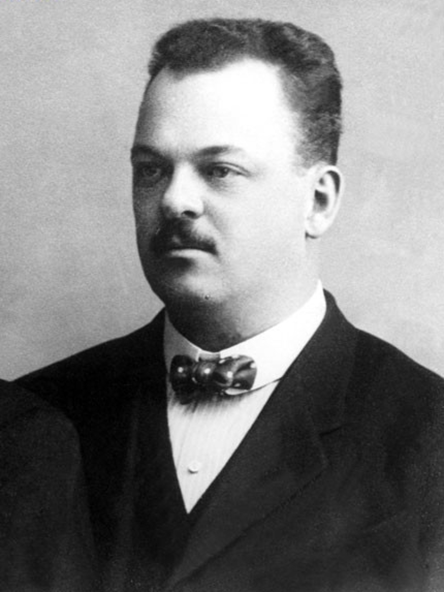
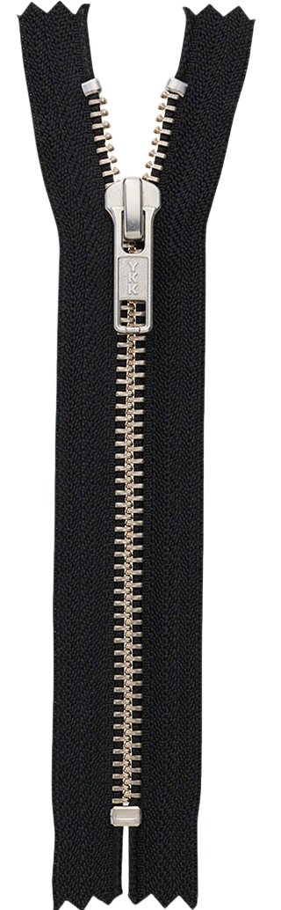
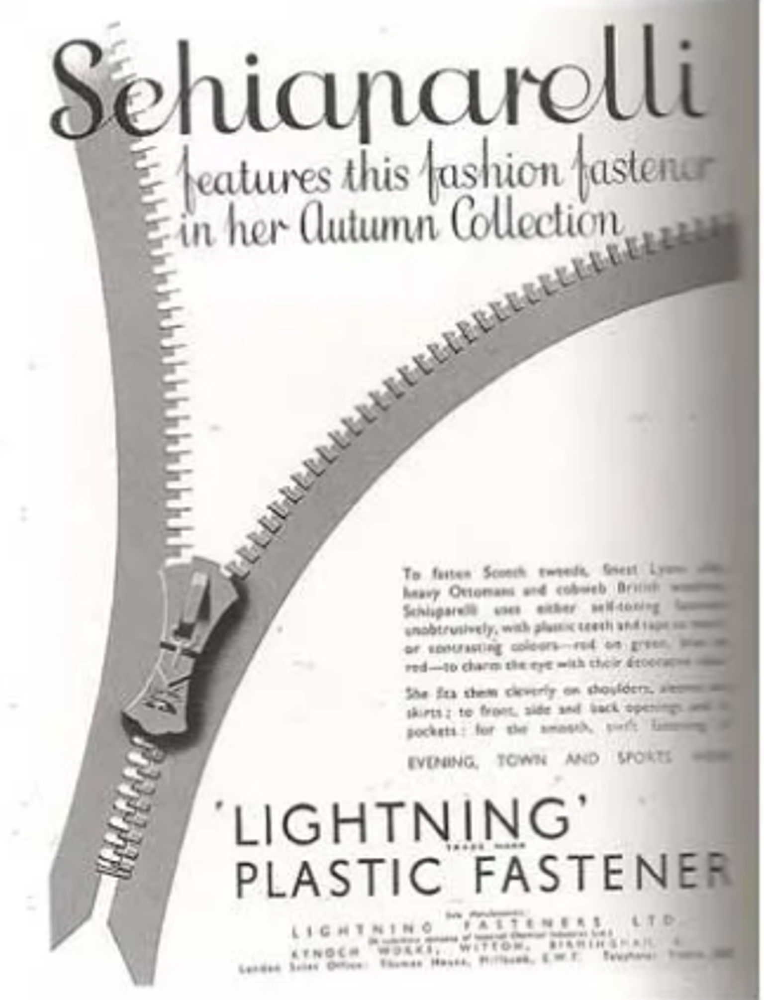
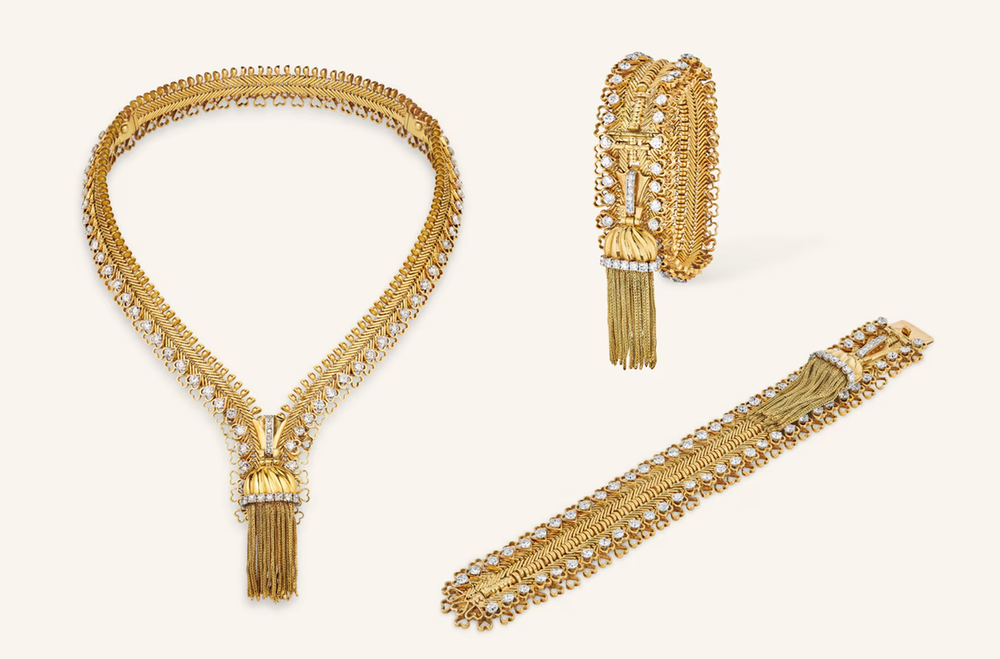
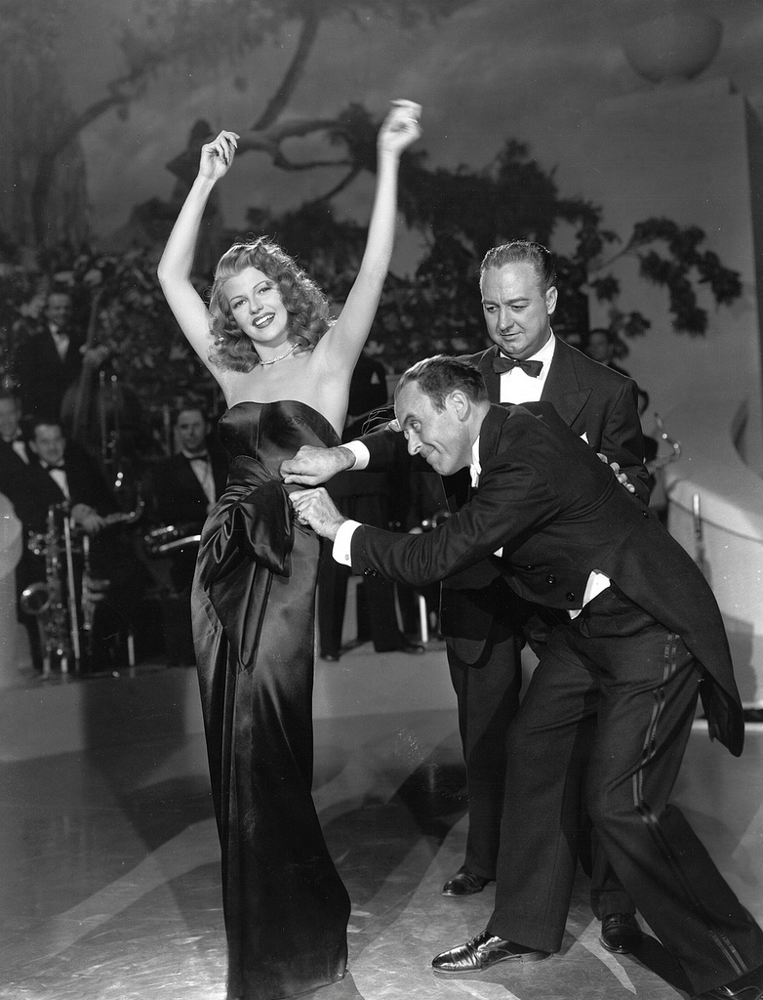

↑ 向上拖拽拉链头，闭合标题
线性革命 · 拉链百年












线性革命
拉链百年：技术与社会的咬合
拉链百年：技术与社会的咬合
在漫长的服饰史中，人类对"闭合"的需求一直存在。在拉链诞生之前，绳结、纽扣统治了此领域数百年，对纽扣的使用已经有六千多年的历史。虽然纽扣并没有被拉链"打败"，而是与拉链长期共存，各自占据不同场景，但我们也可以先通过二者的简单感受现代的拉链作为紧固件的特色。
亲手试一次：感受「串行扣合」与「一次拉合」的差别。
点击拉头，一次滑到底
-
更轻便的操作方式
纽扣虽然稳定，但每颗扣子都需要定位、穿过、拉紧，一个前襟七八颗扣子，穿脱耗时半分钟以上。而拉链一次滑动即可完成全部闭合，把"串行操作"变成了"并行操作"。这种效率提升不仅仅是节省几秒钟，更降低了对手指灵活性、视力和耐心的依赖。
-
更紧密的结构逻辑
纽扣是离散的点控制，对应的力学模型是多个独立拉力点；拉链用一组紧密排列的链牙，实现了近似"连续锁合"的效果，类似于机械领域里"多齿啮合"比"单点锁紧"更可靠的思想，受力均匀分布在整条接缝上，使得采用拉链的衣服不易出现局部鼓包或撕裂。
所以说，拉链在某些方面的独特优势还是非常明显的，给我们带来不小的便利。那么，这样灵巧的小部件究竟是怎样被发明并进入到人类的社会生活中的呢？
1st. 技术发轫
Whitcomb_L._Judson
世界上第一个拉链是由来自美国芝加哥的机械工程师惠特科姆·L·贾德森发明的。
贾德森于1891年发明了现代拉链的前身——"扣锁"，"扣锁"是一种复杂的钩眼扣，由一系列钩眼组成，通过"导轨"来控制衣物的开合。它最初的应用是作为鞋扣，专利中还提到了它的潜在应用，例如紧身胸衣 、 手套 、 邮袋 ，以及"通常任何需要可拆卸地连接一对相邻柔性部件的地方"。 据说他发明这种装置的原因之一是为了减轻当时流行的高筒纽扣靴的系扣繁琐。他于1893年获得两项相关专利，并在芝加哥世博会上首次公开展示，随后与人成立通用紧固件公司进行生产。
然而，这一发明早期在商业上并不成功，存在易意外打开的缺陷。据说在世博会展示的当场，这一构件就尴尬地滑开了。这里有一个设计哲学问题：贾德森某种意义上在模仿纽扣的逻辑去造连续装置。他的钩眼结构本质上还是无数个微型钩扣，每个都可能脱开，在拉合时也不甚顺滑。
自 1836 年《专利法》颁布以来的 57 年间，美国共颁发了超过 50 万项专利，其中不乏意义重大的发明，少数几项甚至在 19 世纪最后十年就已改变了人们的生活。其中一些专利 —— 比如亚历山大・格雷厄姆・贝尔 1876 年的电话专利，或是托马斯・爱迪生 1880 年获得的关键碳丝专利（这是他电气照明系统的基石）—— 都相当知名。然而，这些专利仅占美国发明成果的极小一部分。更为常见的专利，要么只是对成熟技术无关紧要的微小改进，要么是一些只经历过短暂试用便理所应当被遗忘的小装置、小设计；而或许最普遍的，是那些不切实际、毫无意义、无人问津的装置，它们几乎只是发明者或推广者脑海里一闪而过的念头。对于深谙此道的业内人士来说，惠特科姆・贾德森在那个 8 月获得的两项专利，按理说无疑会属于最后一类。事实上，1909 年，惠特科姆・贾德森在密歇根州马斯基根去世时，他并未成名。但它们为何、又如何最终变得截然不同，这正是理解 "人们如何将新事物融入生活" 的核心问题。
贾德森本人为拉链的成功埋下的种子
首先，贾德森的发明是真正有首创性的。导向件作为现代拉链滑块的雏形，是其最具独创性、也最具持久价值的创造。在两项专利中，导向件的功能基本与拉链滑块一致：它是一个扁平的、大致呈三角形的装置，宽端有两个开口，窄端有一个开口；内部有两条通道，从宽端向顶点汇聚成一条。凭借这些特征，可以说贾德森发明了现代拉链的这一核心部分。正如专利局审查员所承认的，这项发明找不到任何真正的先例。
其次，贾德森仍在不断修改和改进他的设计。公司成立前约一个月，他又申请了两项扣件专利，这两项专利于 1896 年获批，仍以鞋用扣件为主题，但其中的发明对贾德森最初的想法做了重大改进，也为二十年后现代拉链的规模化生产奠定了真正的基础。
贾德森在新的专利中描述道："…… 每条链条的每个链节都同时带有公、母连接部件，当两条链条扣合时，一条链条上每个链节的母部件会与另一条链条上链节的公部件啮合。"就这样，对现代拉链核心扣合机制最早的准确预见诞生了。
Gideon Sundback
1913 年，瑞典裔美国工程师吉迪恩·桑德贝克(Gideon Sundback )和欧洲的卡塔琳娜·库恩-穆斯(Catharina Kuhn-Moos)对扣锁进行了改进。
- 从"钩与眼"到"牙与勺"：放弃了贾德森设计中脆弱的钩眼结构，转而采用上下啮合的金属齿。最关键的是，他将每个齿的顶端和末端分别设计成凸起的"匙头"和凹陷的"匙尾"，形成"匙头咬匙尾"的锁合关系。这个精巧的改变极大地增强了侧向抗拉强度，杜绝了意外崩开的问题。
- 增加密度与改进滑块：将每英寸的链牙数量从4个增加到10或11个，让锁合点更细密，连接更牢固顺滑。同时增大了滑块引导齿的开口，改进拉头的导向通道，使得牙齿"一滑即合，一滑即分"。
无钩式金属拉链剔除了初代拉链的钩状结构，具备现代金属拉链的全部核心特征，解决了易崩开、难量产的问题，直接推动拉链商业化落地。
SAME ENERGY
两位发明者都相当积极地促进拉链的工业化、商业化。
- 没有将发明局限在 "鞋用扣件"，而是在专利中强调其 "同样适用于手套、邮袋、紧身胸衣等所有需要可拆式连接相邻柔性部件的场景"，用 "通用" 定位拓宽应用边界，吸引更多领域的投资者。
- 与哈里・厄尔、刘易斯・沃克等人共同成立了通用扣件公司，将专利转让给公司，试图以企业化的模式推进量产和市场推广。
- 即使在商业环境低迷的时期，仍持续修改设计、申请新专利，用 "不断改进" 的姿态向投资者传递项目的发展潜力，为公司争取融资机会。
- 在加拿大安大略省圣凯瑟琳斯市创立了闪电扣件公司，将他的专利设计投入实际生产。
- 发明"S-L"号制造机器：这台机器能从Y形线材上精准切割并冲压出链牙，再自动将其固定在布带上，实现了拉链的机械化连续生产。
- 将其欧洲版权出售给了马丁·奥特玛·温特哈尔特， 温特哈尔特改进了设计，用肋条和凹槽代替了桑德贝克的接合处和钳口， 并开始在他的公司 Riri 大规模生产
无法被技术抹平的人性留白
鞋带：生物力学的"柔性适配"
拉链在鞋履尤其是运动鞋上的失败，本质上是线性刚性与足部动态体积之间的冲突。
- 无限微调： 人的脚在运动过程中体积会发生变化。鞋带允许你在脚踝、脚背、脚弓处分别设置不同的松紧度。拉链只有"开"和"关"两个状态，无法进行局部压力的精密分配。
- 分布式受力： 鞋带通过交叉穿梭，将拉力均匀分布在整个脚背。如果使用拉链，所有的张力都会集中在那一条细长的金属或尼龙线上，极易产生"压迫点"，甚至导致拉链在剧烈运动中崩裂。
- 冗余安全性： 鞋带即使松了一个结，鞋子也不会立刻脱落。这种"渐进式失效"为运动员提供了安全缓冲，而拉链的"单点失效"在高速运动中是致命的。
一、身体适应性
1. 压力贴合
| BOA | 鞋带 | 拉链 |
|---|---|---|
| 线性包裹压力均匀，双旋钮可分区调节，后跟锁定强单旋钮对宽脚、高足弓适配有限，钢缆刚性强，极致收紧易影响局部循环 | 可任意分段调节松紧，柔性材质体感柔和打结处压力集中，运动中易移位失衡 | 无打结压迫几乎不可调，完全依赖版型，链牙、拉头易形成硬压迫点，适配性三者最差 |
2. 动态适配
| BOA | 鞋带 | 拉链 |
|---|---|---|
| 棘轮自锁不松脱，发力传导效率高，可单手戴手套实时微调钢缆无弹性，肢体大幅形变时张力突变，缓冲性弱 | 织带微弹，动态容错性好绳结易松，贴合度衰减快，需频繁重系 | 闭合后不松动无调节余量，运动中足部肿胀易卡压，仅适合低强度日常场景 |
3. 穿戴友好度
| BOA | 鞋带 | 拉链 |
|---|---|---|
| 单手操作，脱卸快，戴手套可用，对行动不便者友好旋钮凸起易有异物感 | 无硬件凸起，体感最自然需双手弯腰操作，戴手套无法调整 | 穿脱速度最快易夹皮肤，链牙摩擦易产生不适 |
二、紧固功能性
1. 锁定可靠性
| BOA | 鞋带 | 拉链 |
|---|---|---|
| 自锁不松脱，钢缆强度高，包裹锁定能力强极端重载下紧固上限弱于鞋带+卡扣组合 | 人力收紧上限高，可局部加强固定绳结易松，长期稳定性三者最差 | 横向抗拉尚可抗扭、抗纵向拉扯弱，易爆链，仅能辅助闭合，无主动紧固支撑力 |
2. 调节与效率
| BOA | 鞋带 | 拉链 |
|---|---|---|
| 毫米级微调精度最高，操作快，运动中可调整单旋钮无法分区，多旋钮方案成本高 | 分区调节自由度最高操作繁琐耗时，运动中难以调整 | 开合速度最快仅全开/全闭两档，完全无松紧调节能力 |
3. 耐用与维修
| BOA | 鞋带 | 拉链 |
|---|---|---|
| 循环寿命长，抗腐蚀，官方质保泥沙冰雪易致旋钮卡顿，现场维修难度大，钢缆怕锐器切割 | 结构极简故障率低，可随手应急替换，环境耐受性最强易磨损起毛，需定期更换 | 日常干态寿命尚可易变形卡滞，进沙结冰易损坏，现场难修复，防水胶条易老化 |
纽扣：容错、呼吸感与"半开放契约"
纽扣之所以在正装和高级时装中屹立不倒，是因为它提供了一种非绝对性的闭合。
- 空气的流动： 纽扣与纽扣之间存在天然的缝隙。这不仅是为了透气，更是为了让布料在身体扭转时有自由位移的空间。拉链由于是物理上的"全封闭"，会导致布料在坐下或弯腰时产生难看的"折皱隆起"，破坏廓形的流畅感。
- 维修的低门槛： 这是一个关于"契约修复"的成本问题。掉了一颗纽扣，任何一个普通人花五分钟就能缝好，且不影响整体功能。拉链一旦"掉牙"或滑块损坏，通常意味着整条拉链甚至整件衣服的报废。
- 触觉逻辑： 纽扣的操作是圆周运动，带有指尖的揉捏动作，触感温润；拉链是生硬的直线拖拽，带有金属的冰冷感。在追求"体温感"的高级服装语境下，纽扣更符合奢侈品的定义。
拉链确实"驯化"了我们的身体去追求极致的效率，但当我们回到需要作为人的舒适或尊严的时刻，我们往往又会退回到那些更原始、更具"协商感"的闭合方式中去。
YKK：Little Parts，Big Difference
YKK的成功，源于将"极致标准"同时贯彻于工业制造与商业逻辑。在工业上，它构建了无所不包的垂直一体化王国：从源头冶炼合金、自研织机纺出布带，自主设计制造生产拉链的精密设备。这种全链掌控使其能推行在全球工厂分毫不变的严苛标准，模具精度达百分之一毫米级，将一件微小的工业品磨砺出磐石般的可靠性能。在商业上，它将这种过剩品质转化为一种聪明的"品牌红利"——当阿迪达斯、耐克及众多奢侈品牌，通过主动展示YKK标识来向消费者无声传达"这件产品经得起考验"时，YKK便已超越供应商身份，成为一种全球通用的品质承诺。
3rd. 文化升华
拉链与非主流文化
拉链凝聚了"性、机械、巧妙、开与合、附与离、显露与隐藏"等多重主题，是20世纪最核心的文化符号之一。
1928年，欧文·肖特为摩托车骑士设计了Perfecto皮夹克，前襟用拉链代替军用夹克上的纽扣。不对称的双排扣剪裁让骑手可以舒适地倚靠车把，夹克售价仅为5.50美元。它在摩托车手中迅速走红。
当马龙·白兰度在1953年电影《飞车党》中穿着拉链皮夹克时，这种造型成为了青春叛逆的代名词。学校开始禁止"白兰度造型"，因为皮夹克被视为对权威的反抗象征。
1970年代，滚石乐队专辑《Sticky Fingers》以前置拉链的牛仔裤作为封面，进一步确立了拉链作为摇滚和亚文化符号的地位。像The Ramones、The Sex Pistols和Duran Duran这样的乐队也保持着那份叛逆的气息。拉链成为外来者身份和反主流酷炫的视觉代名词。
到了赛博朋克文化中，拉链的意涵发生了微妙的转变。机能风服装以暗黑系为主色调，拉链、口袋、绑带等成为重要组成元素，共同营造出工业感和未来感的视觉语言。拉链在这里不再是反叛的象征，而是高效与控制的视觉表达——它的金属光泽和果断的拉动声塑造了一种"人类与机器高效协作"的想象。这种从"反叛"到"控制"的语义偏移，折射出不同历史时期人们对技术物件的不同文化期待。
身体与性别政治中的拉链
在婚姻和亲密关系中，"伴侣帮忙拉上背后拉链"是一个被广泛书写的小场景：妻子在准备出门参加晚宴时，丈夫帮她拉上身后的拉链——这个动作既非纯粹功能性的（她自己完全可以做到），也非直接的身体接触，而是一种独特的亲密仪式。它发生在穿衣的末梢，位于公共与私密、功能与仪式之间的临界地带。
在实际的人际感知中，这个行为的亲密度甚至被赋予了超出预期的权重。有人甚至觉得帮忙拉长外套的拉链有点过于亲密的程度——即使是外套拉链，也会在人际交往中被赋予超越功能性的亲密意味。从人类学的角度看，这种"帮忙"之所以承载着超出其物理功能的含义，是因为它触碰到了一个关键维度：拉链是"身体边界的最后一个把关者"。别人替你拉上拉链，意味着对方被赋予了进入你最贴身领域的短暂权限——无论你所穿的是一件晚礼服还是日常外套。拉链似乎正在成为我们的心理认知中身体的真正边界。
在中世纪晚期，富裕女性由女仆帮助穿衣，纽扣被放在可以从穿衣者角度（即面对穿衣者时左手侧）操作的左侧；而男性自己穿衣，纽扣放在右手侧。某些服装设计中，拉链继承了这一性别化的方向惯例，并延续至今。
但张力在于：拉链在机制上其实比纽扣"更少性别痕迹"。"当拉链闭合时，没有视觉迹象表明拉链头是从哪一侧插入的，不像纽扣衬衫那样有明确的可识别标志——这意味着任何可能的性别指涉都被遮蔽了"。拉链的"头"被遮蔽后，从外部根本看不出这件衣服是为男性还是女性设计的。从宏观的性别政治来看，拉链的这一"可遮蔽性"恰恰指向一个更根本的可能性：服装的分类（男装/女装）并非因技术必要，而可能是工业与市场体系对人进行性别分类的结果。技术物本可以是中性的，但它在特定权力结构中被赋予了规训功能。
随着女装设计中繁琐的纽扣被替换成简便的拉链、"背后拉链"被前置于身体正面，女性在穿衣上的自主性大大提升。拉链通过改变最日常的穿衣体验，在微观层面改变了女性对身体边界的掌控感。
拉链在解放身体的同时，也在规训身体。旧式的系带或纽扣可以细微调整松紧以适应身体，而拉链只要求两个状态：完全拉开或完全闭合。穿不上就是穿不上。这意味着，拉链间接地对身体提出了同质化的要求——身体必须准确地匹配服装的标准尺寸，否则拉链根本合不上。这就是技术物在看似"中性"的运作中执行的身体规训。
沿着福柯式的微观权力分析路径，拉链是"现代性悖论"的一个绝佳范本：它越解放，功能越强大、时间越短，对身体的规训就越隐蔽和精密。
但谈论拉链的身体规训时，不能遗漏它的反向维度——在医疗场景中，拉链发挥着完全不同意味的作用。针对瘫痪病人或肢体不便者，现代服装专门设计了以拉链为核的"易穿脱"体系：病人服装通过拉链实现全开式设计，从两侧或多处开合，减少了穿衣过程中的疼痛和移动不便。
在这些场景中，拉链从"规训身体"的冷漠器具转变为"回应身体"的善意技术。这说明，对拉链的身体政治分析需要避免单向的批判立场——一个技术物的实际效应取决于谁使用它、在什么条件下使用、为了什么目的。
时尚宠儿
太空时代（Space Age）是20世纪中期兴起的复古未来主义设计与文化美学，由冷战太空竞赛、社会对太空探索和科技进步的狂热追捧催生。它盛行于20世纪50年代中期至70年代初，承载着当时普遍的乐观思潮，也寄托了人们对科技缔造乌托邦未来的坚定信念。金属材质因其本身的光泽感、未来感和科技属性，成为设计师构筑"宇宙语汇"的首选材料。拉链作为当时少数具有金属外观的标准化工业零件，在这一语境中顺理成章地进入了装饰语言的视野。装饰用的金属拉链迅速成为"完美体现太空感"的关键元素。
这一时期的时装不再强调身体的曲线，而是追求像飞船舱体一样的几何结构。在这些设计中，拉链往往被安置在打破常规的位置（如正中心、斜跨胸前）， 在这明日世界中，拉链不仅是功能闭合件，更成为几何轮廓的塑形线条、身体与太空之间边界管理的关键装置。
而在21世纪，技术设计的方向却朝着"让拉链在视觉上趋于零"的目标前进。近年来出现的"无布带"拉链，以"视觉的极简"为设计理念，让链牙与面料融为一体，拉链在某种意义上"消失"了——它不再是附着其上的结构，而成为面料本身的一部分。
这不是说拉链的重要性被削弱了，而是拉链的重要性被重新定义：它正从视觉记号转变为结构系统，承担着更复杂的力学、美学和可持续的功能。
NOTAPE"无布带拉链"以减法式设计斩获2024德国红点Best of the Best至尊大奖。
拉链也可以是精致、典雅的。Van Cleef & Arpels自创立以来，因其优雅独特的设计风格，深受皇室与贵族青睐。1930年代，品牌创办人之女，同样也是品牌艺术总监的Renée Puissant收到了温莎公爵夫人的建议，将"拉链"这样再普通不过的日常用品，做成珠宝。
这项建议经过了约二十年的推敲与尝试，才终于在1950年代面世。第一条Zip项链以镶钻的黄金搭配铂金搭配呈现。Zip项链的最大特色，在于可自由转换佩戴方式，既充满趣味性，又兼具实用性。Zip项链在半闭合时可作为项链佩戴；完全拉上、合拢后则能变成一条手链，展现了巧妙的转换设计与珠宝工艺的高超水平，也侧面体现出拉链本身在结构形式上的天才智慧。
拉链与性
性暗示
典型的拉链皮衣形象，是拉链性感文化最经典的视觉呈现之一。这可能是因为拉链的冷硬质感与皮革的柔性包裹感之间的视觉碰撞。此外，许多电影也会利用拉链进行视觉上的性感叙事，如《吉尔达》中以拉动拉链来演绎暧昧与情欲。
性丑闻
拉链门（Zippergate），又称拉链门事件，指1998年曝光的美国时任总统比尔·克林顿与白宫实习生莫妮卡·莱温斯基的性丑闻事件。拉链门"名字的由来源于丑闻中莱温斯基被描述为拉开克林顿裤子拉链的"标志性动作"，它是对"水门事件"（Watergate）一词的仿照。
2nd. 社会认知
当机械结构在物理上变得绝对可靠后，拉链开始超越其辅料身份，成为一种强行改变人类行为的工程动力。
技术信任
拉链发展史上的一个关键转折点出现在第一次世界大战期间。战争初期，民用市场推广遇冷、铜价暴涨推高了拉链的制造成本，扣件公司本已陷入困境，但战争及其对非常规服装和装备的需求，为这种新型扣件带来了商业机会，意外找到了新的增长路径。
心理转译
无钩扣件公司的设计师埃维格担心自己的新设计会被仿冒者偷走，于是向刘易斯·沃克声称他已经以"Zip"为名为它申请了商标权。其实早在两年半前，沃克兄弟俩刚到纽约时，就曾经向父亲建议给产品换个更吸引人的名字，但未能获得父亲的同意。
直到1921 年 4 月底，无钩扣件公司的账本上，记录了一笔不起眼的小额订单：一批价值 5.05 美元的扣件，将发往俄亥俄州阿克伦市的 B.F. 古德里奇橡胶公司。古德里奇公司成功研制出一款使用无钩扣件的橡胶雨鞋。古德里奇总裁本杰明・G・沃克的高度认可，让这家扣件厂商收获了一位长期核心大客户。古德里奇迅速将Zipper注册为新款雨靴的商标。
"Zipper" 被全民广泛使用的具体历程，已难以精准考证。20 世纪 20 年代中期，大众接触这个词汇的主要渠道，就是古德里奇的拉链雨靴。1927 年之前，这款雨靴常年消耗无钩扣件公司 70% 的总产量。到 20 年代后期，虽然雨靴潮流慢慢褪去，Zipper（拉链） 一词却彻底扎根于美式英语，成为通用经典词汇，其普及度甚至远超扣件这款产品本身。